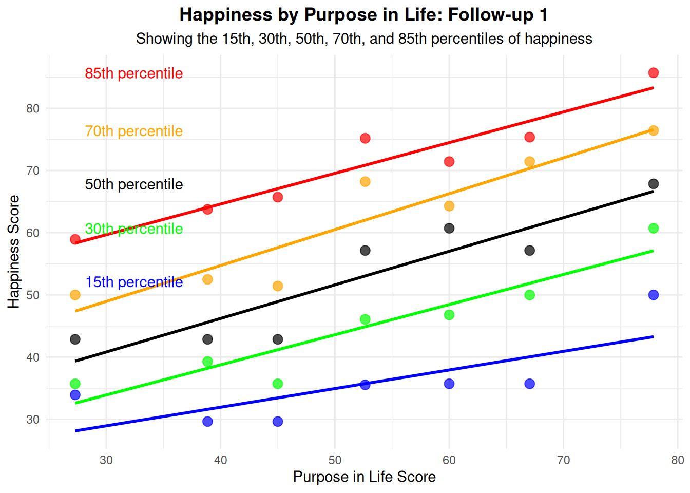

![]()
| Measure | Timepoint | N | Mean | SD | Min | Max | Cronbach's α |
|---|---|---|---|---|---|---|---|
| Happiness | Baseline | 328 | 53.09 | 19.23 | 0.00 | 85.71 | 0.874 |
| Happiness | Follow-up 1 | 200 | 53.73 | 20.08 | 0.00 | 85.71 | 0.887 |
| Happiness | Follow-up 2 | 119 | 51.56 | 20.18 | 0.00 | 82.14 | 0.889 |
| Purpose | Baseline | 314 | 54.17 | 17.86 | 0.00 | 80.00 | 0.844 |
| Purpose | Follow-up 1 | 197 | 55.23 | 16.96 | 0.00 | 80.00 | 0.904 |
| Purpose | Follow-up 2 | 119 | 54.58 | 18.13 | 0.00 | 80.00 | 0.884 |
Measuring Purpose and Happiness
Psychometrics and Tests of Stability and Specificity Over Two Years
Abstract
In the social sciences, a case has been made for distinguishing between purpose in life and happiness. That said, a surprisingly small number of direct empirical comparisons exist. The following study addresses the relative stability of purpose and happiness ratings over time (baseline, 6 months, and 1 year follow-up). In addition, we explored whether purpose and happiness change independently of each other over time. Furthermore, we tested what best differentiates purpose and happiness using a comprehensive battery of personality constructs (e.g., goal-specific hope scale, psychological needs, distress tolerance, and values).
Keywords
purpose in life, happiness, life satisfaction, well-being, values, personality
Analysis 1: Descriptives and Psychometrics (Comparability of Measures)
Analysis 2: Multi-Sample Analysis (Temporal Stability of Relationship)
Missing data summary: b_shs_gh_a b_shs_rh_a b_shs_ch_a b_shs_ch_b_r
17 17 17 17
fu1_shs_gh_a fu1_shs_rh_a fu1_shs_ch_a fu1_shs_ch_fu1_r
145 145 145 145
fu2_shs_gh_a fu2_shs_rh_a fu2_shs_ch_a fu2_shs_ch_b_r
226 226 226 226
b_bpurp_1 b_bpurp_2 b_bpurp_3 b_bpurp_4
31 31 31 31
fu1_bpurp_1 fu1_bpurp_2 fu1_bpurp_3 fu1_bpurp_4
148 148 148 148
fu2_bpurp_1 fu2_bpurp_2 fu2_bpurp_3 fu2_bpurp_4
226 226 226 226
Descriptive statistics for POMP scores: vars n mean sd median min max range skew
b_shs_gh_a_pomp 1 328 57.62 18.54 57.14 0 85.71 85.71 -0.57
b_shs_rh_a_pomp 2 328 51.52 21.95 57.14 0 85.71 85.71 -0.27
b_shs_ch_a_pomp 3 328 49.91 23.46 57.14 0 85.71 85.71 -0.38
b_shs_ch_b_r_pomp 4 328 53.31 25.75 57.14 0 85.71 85.71 -0.27
fu1_shs_gh_a_pomp 5 200 57.00 21.43 57.14 0 85.71 85.71 -0.67
fu1_shs_rh_a_pomp 6 200 50.86 23.65 57.14 0 85.71 85.71 -0.36
fu1_shs_ch_a_pomp 7 200 52.86 23.14 57.14 0 85.71 85.71 -0.37
fu1_shs_ch_fu1_r_pomp 8 200 54.21 24.57 57.14 0 85.71 85.71 -0.38
fu2_shs_gh_a_pomp 9 119 55.94 20.92 57.14 0 85.71 85.71 -0.72
fu2_shs_rh_a_pomp 10 119 50.66 23.06 57.14 0 85.71 85.71 -0.50
fu2_shs_ch_a_pomp 11 119 48.14 24.38 57.14 0 85.71 85.71 -0.28
fu2_shs_ch_b_r_pomp 12 119 51.50 24.62 57.14 0 85.71 85.71 -0.43
b_bpurp_1_pomp 13 314 58.09 21.36 60.00 0 80.00 80.00 -0.95
b_bpurp_2_pomp 14 314 59.55 19.48 60.00 0 80.00 80.00 -0.93
b_bpurp_3_pomp 15 314 49.75 23.24 60.00 0 80.00 80.00 -0.59
b_bpurp_4_pomp 16 314 49.30 22.27 60.00 0 80.00 80.00 -0.43
fu1_bpurp_1_pomp 17 197 57.66 18.75 60.00 0 80.00 80.00 -1.10
fu1_bpurp_2_pomp 18 197 58.48 17.49 60.00 0 80.00 80.00 -0.67
fu1_bpurp_3_pomp 19 197 52.99 21.13 60.00 0 80.00 80.00 -0.69
fu1_bpurp_4_pomp 20 197 51.78 19.47 60.00 0 80.00 80.00 -0.63
fu2_bpurp_1_pomp 21 119 58.15 18.77 60.00 0 80.00 80.00 -1.04
fu2_bpurp_2_pomp 22 119 57.65 20.37 60.00 0 80.00 80.00 -1.06
fu2_bpurp_3_pomp 23 119 50.92 22.96 60.00 0 80.00 80.00 -0.60
fu2_bpurp_4_pomp 24 119 51.60 21.86 60.00 0 80.00 80.00 -0.63
kurtosis se
b_shs_gh_a_pomp 0.19 1.02
b_shs_rh_a_pomp -0.66 1.21
b_shs_ch_a_pomp -0.63 1.30
b_shs_ch_b_r_pomp -1.19 1.42
fu1_shs_gh_a_pomp -0.01 1.52
fu1_shs_rh_a_pomp -0.75 1.67
fu1_shs_ch_a_pomp -0.72 1.64
fu1_shs_ch_fu1_r_pomp -0.96 1.74
fu2_shs_gh_a_pomp 0.13 1.92
fu2_shs_rh_a_pomp -0.50 2.11
fu2_shs_ch_a_pomp -0.74 2.24
fu2_shs_ch_b_r_pomp -0.79 2.26
b_bpurp_1_pomp 0.28 1.21
b_bpurp_2_pomp 0.56 1.10
b_bpurp_3_pomp -0.48 1.31
b_bpurp_4_pomp -0.62 1.26
fu1_bpurp_1_pomp 1.29 1.34
fu1_bpurp_2_pomp 0.12 1.25
fu1_bpurp_3_pomp -0.13 1.51
fu1_bpurp_4_pomp 0.01 1.39
fu2_bpurp_1_pomp 1.05 1.72
fu2_bpurp_2_pomp 0.87 1.87
fu2_bpurp_3_pomp -0.42 2.10
fu2_bpurp_4_pomp -0.17 2.00
Fitting multisample CFA model with FIML...Warning: lavaan->lav_data_full():
some cases are empty and will be ignored: 1 58 62 109 121 124 168 181 205
225 276 314 329 337 345.
Model Fit Indices: chisq df pvalue cfi tli rmsea srmr aic
427.841 237.000 0.000 0.947 0.938 0.049 0.057 42644.566
bic
42975.087
Standardized Factor Loadings: lhs rhs est.std pvalue
1 baseline_happiness b_shs_gh_a_pomp 0.900 0
2 baseline_happiness b_shs_rh_a_pomp 0.892 0
3 baseline_happiness b_shs_ch_a_pomp 0.799 0
4 baseline_happiness b_shs_ch_b_r_pomp 0.651 0
5 baseline_purpose b_bpurp_1_pomp 0.845 0
6 baseline_purpose b_bpurp_2_pomp 0.673 0
7 baseline_purpose b_bpurp_3_pomp 0.851 0
8 baseline_purpose b_bpurp_4_pomp 0.691 0
9 followup1_happiness fu1_shs_gh_a_pomp 0.897 0
10 followup1_happiness fu1_shs_rh_a_pomp 0.861 0
11 followup1_happiness fu1_shs_ch_a_pomp 0.876 0
12 followup1_happiness fu1_shs_ch_fu1_r_pomp 0.669 0
13 followup1_purpose fu1_bpurp_1_pomp 0.839 0
14 followup1_purpose fu1_bpurp_2_pomp 0.851 0
15 followup1_purpose fu1_bpurp_3_pomp 0.873 0
16 followup1_purpose fu1_bpurp_4_pomp 0.822 0
17 followup2_happiness fu2_shs_gh_a_pomp 0.937 0
18 followup2_happiness fu2_shs_rh_a_pomp 0.905 0
19 followup2_happiness fu2_shs_ch_a_pomp 0.829 0
20 followup2_happiness fu2_shs_ch_b_r_pomp 0.617 0
21 followup2_purpose fu2_bpurp_1_pomp 0.846 0
22 followup2_purpose fu2_bpurp_2_pomp 0.763 0
23 followup2_purpose fu2_bpurp_3_pomp 0.888 0
24 followup2_purpose fu2_bpurp_4_pomp 0.790 0
Standardized Correlations between Purpose and Happiness: Timepoint Correlation p_value
1 Baseline 0.429 0.000
2 Follow-up 1 0.528 0.000
3 Follow-up 2 0.478 0.000
4 Baseline 0.440 0.000
5 Follow-up 1 0.568 0.000
6 Follow-up 2 0.495 0.000
Formatted Table created as formatted_tableWarning: Using `size` aesthetic for lines was deprecated in ggplot2 3.4.0.
ℹ Please use `linewidth` instead.
Visualization saved as 'purpose_happiness_relationship.png'Warning in semPaths(cfa_fit, what = "std", edge.label.cex = 0.6, sizeMan = 5, :
Groups specified numerically and 'manifests' not supplied. Results might be
unexpected.Error in if (border) { : missing value where TRUE/FALSE needed
Attempting alternative approach for creating semPlot diagram...Warning in semPaths(cfa_fit, what = "std", edge.label.cex = 0.6, sizeMan = 5, :
Groups specified numerically and 'manifests' not supplied. Results might be
unexpected.Error in if (border) { : missing value where TRUE/FALSE needed
Detailed CFA path diagram saved as 'cfa_model_diagram.pdf'
====== MULTISAMPLE CFA RESULTS SUMMARY ======
The multisample CFA model examined the structural relationship between Purpose and Happiness
across three timepoints (Baseline, Follow-up 1, and Follow-up 2) using POMP scores.
Model Fit:
Chi-square: 427.84 (df = 237, p = 4.04e-13)
CFI: 0.947
TLI: 0.938
RMSEA: 0.049
SRMR: 0.057
Standardized Correlations between Purpose and Happiness:
Baseline: r = 0.429 (p < 0.001)
Follow-up 1: r = 0.528 (p < 0.001)
Follow-up 2: r = 0.478 (p < 0.001)
Analysis completed successfully. Results and visualizations have been saved.Analysis 3: Cross-lagged Panel Analysis (Causal Direction)
[1] "Missing values per variable:" b_happiness fu1_happiness fu2_happiness b_purpose fu1_purpose fu2_purpose
1 17 145 226 31 148 226 n mean sd se
Baseline Happiness 328 53.09 19.23 1.06
FU1 Happiness 200 53.73 20.08 1.42
FU2 Happiness 119 51.56 20.18 1.85
Baseline Purpose 314 54.17 17.86 1.01
FU1 Purpose 197 55.23 16.96 1.21
FU2 Purpose 119 54.58 18.13 1.66[1] "Correlation matrix:" b_happiness fu1_happiness fu2_happiness b_purpose fu1_purpose
b_happiness 1.0000000 0.7143714 0.7215328 0.3956371 0.3732504
fu1_happiness 0.7143714 1.0000000 0.7304293 0.2630812 0.4698754
fu2_happiness 0.7215328 0.7304293 1.0000000 0.2877590 0.2640535
b_purpose 0.3956371 0.2630812 0.2877590 1.0000000 0.6027004
fu1_purpose 0.3732504 0.4698754 0.2640535 0.6027004 1.0000000
fu2_purpose 0.4828815 0.3926176 0.4047259 0.5055893 0.6362005
fu2_purpose
b_happiness 0.4828815
fu1_happiness 0.3926176
fu2_happiness 0.4047259
b_purpose 0.5055893
fu1_purpose 0.6362005
fu2_purpose 1.0000000Warning: lavaan->lav_data_full():
some cases are empty and will be ignored: 1 58 62 109 121 124 168 181 205
225 276 314 329 337 345.lavaan 0.6-19 ended normally after 105 iterations
Estimator ML
Optimization method NLMINB
Number of model parameters 23
Used Total
Number of observations 330 345
Number of missing patterns 11
Model Test User Model:
Test statistic 36.194
Degrees of freedom 4
P-value (Chi-square) 0.000
Model Test Baseline Model:
Test statistic 512.785
Degrees of freedom 15
P-value 0.000
User Model versus Baseline Model:
Comparative Fit Index (CFI) 0.935
Tucker-Lewis Index (TLI) 0.757
Robust Comparative Fit Index (CFI) 0.913
Robust Tucker-Lewis Index (TLI) 0.674
Loglikelihood and Information Criteria:
Loglikelihood user model (H0) -5305.474
Loglikelihood unrestricted model (H1) -5287.377
Akaike (AIC) 10656.948
Bayesian (BIC) 10744.327
Sample-size adjusted Bayesian (SABIC) 10671.371
Root Mean Square Error of Approximation:
RMSEA 0.156
90 Percent confidence interval - lower 0.112
90 Percent confidence interval - upper 0.205
P-value H_0: RMSEA <= 0.050 0.000
P-value H_0: RMSEA >= 0.080 0.997
Robust RMSEA 0.266
90 Percent confidence interval - lower 0.190
90 Percent confidence interval - upper 0.350
P-value H_0: Robust RMSEA <= 0.050 0.000
P-value H_0: Robust RMSEA >= 0.080 1.000
Standardized Root Mean Square Residual:
SRMR 0.068
Parameter Estimates:
Standard errors Standard
Information Observed
Observed information based on Hessian
Regressions:
Estimate Std.Err z-value P(>|z|) Std.lv Std.all
fu1_happiness ~
b_happnss (a1) 0.783 0.055 14.120 0.000 0.783 0.740
fu2_happiness ~
f1_hppnss (a2) 0.718 0.067 10.768 0.000 0.718 0.742
fu1_purpose ~
b_purpose (b1) 0.544 0.061 8.947 0.000 0.544 0.556
fu2_purpose ~
fu1_purps (b2) 0.609 0.083 7.322 0.000 0.609 0.582
fu1_purpose ~
b_happnss (c1) 0.168 0.053 3.161 0.002 0.168 0.185
fu2_purpose ~
f1_hppnss (c2) 0.149 0.068 2.197 0.028 0.149 0.165
fu1_happiness ~
b_purpose (d1) -0.039 0.062 -0.633 0.527 -0.039 -0.035
fu2_happiness ~
fu1_purps (d2) -0.049 0.083 -0.585 0.558 -0.049 -0.043
Covariances:
Estimate Std.Err z-value P(>|z|) Std.lv Std.all
b_happiness ~~
b_purpose (e1) 132.765 20.538 6.464 0.000 132.765 0.388
.fu1_happiness ~~
.fu1_purps (e2) 70.497 14.140 4.986 0.000 70.497 0.382
.fu2_happiness ~~
.fu2_purps (e3) 44.452 18.038 2.464 0.014 44.452 0.243
Intercepts:
Estimate Std.Err z-value P(>|z|) Std.lv Std.all
.fu1_happiness 13.801 3.766 3.665 0.000 13.801 0.680
.fu2_happiness 16.226 4.659 3.483 0.000 16.226 0.827
.fu1_purpose 15.884 3.677 4.320 0.000 15.884 0.910
.fu2_purpose 13.453 4.570 2.944 0.003 13.453 0.736
b_happiness 53.150 1.058 50.216 0.000 53.150 2.769
b_purpose 53.975 1.000 53.990 0.000 53.975 3.026
Variances:
Estimate Std.Err z-value P(>|z|) Std.lv Std.all
.fu1_happiness 193.890 19.167 10.116 0.000 193.890 0.471
.fu2_happiness 183.814 24.539 7.491 0.000 183.814 0.478
.fu1_purpose 175.755 17.988 9.770 0.000 175.755 0.577
.fu2_purpose 181.320 25.022 7.246 0.000 181.320 0.543
b_happiness 368.354 28.732 12.820 0.000 368.354 1.000
b_purpose 318.229 25.341 12.558 0.000 318.229 1.000
Defined Parameters:
Estimate Std.Err z-value P(>|z|) Std.lv Std.all
p_h_p_indirect 0.064 0.050 1.283 0.199 0.064 0.077
h_p_h_indirect -0.043 0.074 -0.586 0.558 -0.043 -0.037[1] "Path coefficients (standardized):" lhs op rhs label est std.all pvalue
1 fu1_happiness ~ b_happiness a1 0.783 0.740 0.000
2 fu2_happiness ~ fu1_happiness a2 0.718 0.742 0.000
3 fu1_purpose ~ b_purpose b1 0.544 0.556 0.000
4 fu2_purpose ~ fu1_purpose b2 0.609 0.582 0.000
5 fu1_purpose ~ b_happiness c1 0.168 0.185 0.002
6 fu2_purpose ~ fu1_happiness c2 0.149 0.165 0.028
7 fu1_happiness ~ b_purpose d1 -0.039 -0.035 0.527
8 fu2_happiness ~ fu1_purpose d2 -0.049 -0.043 0.558
Auto-regressive paths (stability):Happiness (T1→T2): 0.782504 p = 0 Happiness (T2→T3): 0.7176054 p = 0 Purpose (T1→T2): 0.5438442 p = 0 Purpose (T2→T3): 0.6091186 p = 2.44027e-13
Cross-lagged effects:Happiness→Purpose (T1→T2): 0.168419 p = 0.001570851 Happiness→Purpose (T2→T3): 0.1487128 p = 0.02801727 Purpose→Happiness (T1→T2): -0.03947932 p = 0.5270006 Purpose→Happiness (T2→T3): -0.04873728 p = 0.5582748
Indirect effects:Purpose→Happiness→Purpose: 0.06361989 p = 0.1993182 Happiness→Purpose→Happiness: -0.04313694 p = 0.5576541 Warning: lavaan->lav_data_full():
some cases are empty and will be ignored: 1 58 62 109 121 124 168 181 205
225 276 314 329 337 345.lavaan 0.6-19 ended normally after 104 iterations
Estimator ML
Optimization method NLMINB
Number of model parameters 23
Number of equality constraints 2
Used Total
Number of observations 330 345
Number of missing patterns 11
Model Test User Model:
Test statistic 36.258
Degrees of freedom 6
P-value (Chi-square) 0.000
Model Test Baseline Model:
Test statistic 512.785
Degrees of freedom 15
P-value 0.000
User Model versus Baseline Model:
Comparative Fit Index (CFI) 0.939
Tucker-Lewis Index (TLI) 0.848
Robust Comparative Fit Index (CFI) 0.918
Robust Tucker-Lewis Index (TLI) 0.794
Loglikelihood and Information Criteria:
Loglikelihood user model (H0) -5305.506
Loglikelihood unrestricted model (H1) -5287.377
Akaike (AIC) 10653.012
Bayesian (BIC) 10732.793
Sample-size adjusted Bayesian (SABIC) 10666.181
Root Mean Square Error of Approximation:
RMSEA 0.124
90 Percent confidence interval - lower 0.087
90 Percent confidence interval - upper 0.164
P-value H_0: RMSEA <= 0.050 0.001
P-value H_0: RMSEA >= 0.080 0.973
Robust RMSEA 0.212
90 Percent confidence interval - lower 0.151
90 Percent confidence interval - upper 0.278
P-value H_0: Robust RMSEA <= 0.050 0.000
P-value H_0: Robust RMSEA >= 0.080 1.000
Standardized Root Mean Square Residual:
SRMR 0.068
Parameter Estimates:
Standard errors Standard
Information Observed
Observed information based on Hessian
Regressions:
Estimate Std.Err z-value P(>|z|) Std.lv Std.all
fu1_happiness ~
b_happnss (a1) 0.781 0.053 14.784 0.000 0.781 0.740
fu2_happiness ~
f1_hppnss (a2) 0.718 0.062 11.581 0.000 0.718 0.740
fu1_purpose ~
b_purpose (b1) 0.546 0.058 9.437 0.000 0.546 0.559
fu2_purpose ~
fu1_purps (b2) 0.604 0.077 7.854 0.000 0.604 0.575
fu1_purpose ~
b_happnss (c) 0.161 0.041 3.945 0.000 0.161 0.177
fu2_purpose ~
f1_hppnss (c) 0.161 0.041 3.945 0.000 0.161 0.178
fu1_happiness ~
b_purpose (d) -0.043 0.049 -0.865 0.387 -0.043 -0.038
fu2_happiness ~
fu1_purps (d) -0.043 0.049 -0.865 0.387 -0.043 -0.038
Covariances:
Estimate Std.Err z-value P(>|z|) Std.lv Std.all
b_happiness ~~
b_purpose 132.792 20.538 6.466 0.000 132.792 0.388
.fu1_happiness ~~
.fu1_purpose 70.445 14.127 4.986 0.000 70.445 0.382
.fu2_happiness ~~
.fu2_purpose 44.310 18.037 2.457 0.014 44.310 0.243
Intercepts:
Estimate Std.Err z-value P(>|z|) Std.lv Std.all
.fu1_happiness 14.060 3.435 4.093 0.000 14.060 0.694
.fu2_happiness 15.881 3.919 4.053 0.000 15.881 0.809
.fu1_purpose 16.195 3.464 4.676 0.000 16.195 0.930
.fu2_purpose 13.080 4.328 3.022 0.003 13.080 0.715
b_happiness 53.150 1.058 50.216 0.000 53.150 2.769
b_purpose 53.975 1.000 53.989 0.000 53.975 3.026
Variances:
Estimate Std.Err z-value P(>|z|) Std.lv Std.all
.fu1_happiness 193.862 19.162 10.117 0.000 193.862 0.473
.fu2_happiness 183.820 24.539 7.491 0.000 183.820 0.477
.fu1_purpose 175.643 17.965 9.777 0.000 175.643 0.579
.fu2_purpose 181.530 25.035 7.251 0.000 181.530 0.542
b_happiness 368.355 28.732 12.820 0.000 368.355 1.000
b_purpose 318.250 25.342 12.558 0.000 318.250 1.000
Defined Parameters:
Estimate Std.Err z-value P(>|z|) Std.lv Std.all
cross_diff 0.203 0.068 3.000 0.003 0.203 0.215
Model comparison - testing equality of cross-lagged effects across time:
Chi-Squared Difference Test
Df AIC BIC Chisq Chisq diff RMSEA Df diff Pr(>Chisq)
clpm_fit 4 10657 10744 36.194
equal_cross_fit 6 10653 10733 36.258 0.063969 0 2 0.9685Warning: lavaan->lav_data_full():
some cases are empty and will be ignored: 1 58 62 109 121 124 168 181 205
225 276 314 329 337 345.lavaan 0.6-19 ended normally after 103 iterations
Estimator ML
Optimization method NLMINB
Number of model parameters 23
Number of equality constraints 2
Used Total
Number of observations 330 345
Number of missing patterns 11
Model Test User Model:
Test statistic 45.111
Degrees of freedom 6
P-value (Chi-square) 0.000
Model Test Baseline Model:
Test statistic 512.785
Degrees of freedom 15
P-value 0.000
User Model versus Baseline Model:
Comparative Fit Index (CFI) 0.921
Tucker-Lewis Index (TLI) 0.804
Robust Comparative Fit Index (CFI) 0.905
Robust Tucker-Lewis Index (TLI) 0.763
Loglikelihood and Information Criteria:
Loglikelihood user model (H0) -5309.932
Loglikelihood unrestricted model (H1) -5287.377
Akaike (AIC) 10661.865
Bayesian (BIC) 10741.646
Sample-size adjusted Bayesian (SABIC) 10675.034
Root Mean Square Error of Approximation:
RMSEA 0.141
90 Percent confidence interval - lower 0.104
90 Percent confidence interval - upper 0.180
P-value H_0: RMSEA <= 0.050 0.000
P-value H_0: RMSEA >= 0.080 0.996
Robust RMSEA 0.227
90 Percent confidence interval - lower 0.166
90 Percent confidence interval - upper 0.293
P-value H_0: Robust RMSEA <= 0.050 0.000
P-value H_0: Robust RMSEA >= 0.080 1.000
Standardized Root Mean Square Residual:
SRMR 0.076
Parameter Estimates:
Standard errors Standard
Information Observed
Observed information based on Hessian
Regressions:
Estimate Std.Err z-value P(>|z|) Std.lv Std.all
fu1_happiness ~
b_happnss (a1) 0.716 0.049 14.646 0.000 0.716 0.684
fu2_happiness ~
f1_hppnss (a2) 0.666 0.060 11.030 0.000 0.666 0.683
fu1_purpose ~
b_purpose (b1) 0.611 0.054 11.308 0.000 0.611 0.617
fu2_purpose ~
fu1_purps (b2) 0.671 0.075 8.895 0.000 0.671 0.641
fu1_purpose ~
b_happnss (c) 0.081 0.038 2.100 0.036 0.081 0.087
fu1_happiness ~
b_purpose (c) 0.081 0.038 2.100 0.036 0.081 0.071
fu2_purpose ~
f1_hppnss (d) 0.069 0.050 1.372 0.170 0.069 0.075
fu2_happiness ~
fu1_purps (d) 0.069 0.050 1.372 0.170 0.069 0.062
Covariances:
Estimate Std.Err z-value P(>|z|) Std.lv Std.all
b_happiness ~~
b_purpose 133.453 20.533 6.500 0.000 133.453 0.390
.fu1_happiness ~~
.fu1_purpose 71.569 14.474 4.945 0.000 71.569 0.382
.fu2_happiness ~~
.fu2_purpose 47.775 18.594 2.569 0.010 47.775 0.257
Intercepts:
Estimate Std.Err z-value P(>|z|) Std.lv Std.all
.fu1_happiness 10.778 3.584 3.008 0.003 10.778 0.536
.fu2_happiness 12.459 4.229 2.946 0.003 12.459 0.636
.fu1_purpose 16.911 3.684 4.591 0.000 16.911 0.957
.fu2_purpose 14.237 4.629 3.076 0.002 14.237 0.769
b_happiness 53.151 1.059 50.207 0.000 53.151 2.769
b_purpose 53.987 0.998 54.071 0.000 53.987 3.029
Variances:
Estimate Std.Err z-value P(>|z|) Std.lv Std.all
.fu1_happiness 197.288 19.625 10.053 0.000 197.288 0.489
.fu2_happiness 187.675 25.247 7.434 0.000 187.675 0.489
.fu1_purpose 178.093 18.301 9.731 0.000 178.093 0.570
.fu2_purpose 184.725 25.651 7.201 0.000 184.725 0.539
b_happiness 368.450 28.746 12.818 0.000 368.450 1.000
b_purpose 317.623 25.258 12.575 0.000 317.623 1.000
Model comparison - testing bidirectional equality of cross-lagged effects:
Chi-Squared Difference Test
Df AIC BIC Chisq Chisq diff RMSEA Df diff Pr(>Chisq)
clpm_fit 4 10657 10744 36.194
bidirectional_fit 6 10662 10742 45.111 8.9167 0.10237 2 0.01158 *
---
Signif. codes: 0 '***' 0.001 '**' 0.01 '*' 0.05 '.' 0.1 ' ' 1
Variance explained (R-squared):fu1_happiness fu2_happiness fu1_purpose fu2_purpose
0.529 0.522 0.423 0.457 Analysis 3: Quantile Regression (Deeper Look into the Relationship)
| Quantile | Slope | t-value | p-value | Timepoint | Significant | |
|---|---|---|---|---|---|---|
| b_purpose | 15th | 0.40 | 3.91 | 0.000 | Baseline | * |
| b_purpose1 | 30th | 0.54 | 6.80 | 0.000 | Baseline | * |
| b_purpose2 | 50th | 0.48 | 7.39 | 0.000 | Baseline | * |
| b_purpose3 | 70th | 0.48 | 6.02 | 0.000 | Baseline | * |
| b_purpose4 | 85th | 0.40 | 6.25 | 0.000 | Baseline | * |
| fu1_purpose | 15th | 0.50 | 3.56 | 0.000 | Follow-up 1 | * |
| fu1_purpose1 | 30th | 0.57 | 5.62 | 0.000 | Follow-up 1 | * |
| fu1_purpose2 | 50th | 0.71 | 8.09 | 0.000 | Follow-up 1 | * |
| fu1_purpose3 | 70th | 0.71 | 6.16 | 0.000 | Follow-up 1 | * |
| fu1_purpose4 | 85th | 0.49 | 4.02 | 0.000 | Follow-up 1 | * |
| fu2_purpose | 15th | 0.41 | 2.18 | 0.032 | Follow-up 2 | * |
| fu2_purpose1 | 30th | 0.57 | 4.49 | 0.000 | Follow-up 2 | * |
| fu2_purpose2 | 50th | 0.55 | 4.15 | 0.000 | Follow-up 2 | * |
| fu2_purpose3 | 70th | 0.45 | 3.38 | 0.001 | Follow-up 2 | * |
| fu2_purpose4 | 85th | 0.29 | 2.17 | 0.032 | Follow-up 2 | * |
Warning: Removed 1 row containing non-finite outside the scale range (`stat_smooth()`).
Removed 1 row containing non-finite outside the scale range (`stat_smooth()`).
Removed 1 row containing non-finite outside the scale range (`stat_smooth()`).
Removed 1 row containing non-finite outside the scale range (`stat_smooth()`).
Removed 1 row containing non-finite outside the scale range (`stat_smooth()`).Warning: Removed 1 row containing missing values or values outside the scale range
(`geom_point()`).
Removed 1 row containing missing values or values outside the scale range
(`geom_point()`).
Removed 1 row containing missing values or values outside the scale range
(`geom_point()`).
Removed 1 row containing missing values or values outside the scale range
(`geom_point()`).
Removed 1 row containing missing values or values outside the scale range
(`geom_point()`).Warning: Removed 1 row containing non-finite outside the scale range
(`stat_smooth()`).Warning: Removed 1 row containing non-finite outside the scale range (`stat_smooth()`).
Removed 1 row containing non-finite outside the scale range (`stat_smooth()`).
Removed 1 row containing non-finite outside the scale range (`stat_smooth()`).
Removed 1 row containing non-finite outside the scale range (`stat_smooth()`).Warning: Removed 1 row containing missing values or values outside the scale range
(`geom_point()`).
Removed 1 row containing missing values or values outside the scale range
(`geom_point()`).
Removed 1 row containing missing values or values outside the scale range
(`geom_point()`).
Removed 1 row containing missing values or values outside the scale range
(`geom_point()`).
Removed 1 row containing missing values or values outside the scale range
(`geom_point()`).
Warning: Removed 1 row containing non-finite outside the scale range
(`stat_smooth()`).Warning: Removed 1 row containing non-finite outside the scale range (`stat_smooth()`).
Removed 1 row containing non-finite outside the scale range (`stat_smooth()`).
Removed 1 row containing non-finite outside the scale range (`stat_smooth()`).
Removed 1 row containing non-finite outside the scale range (`stat_smooth()`).Warning: Removed 1 row containing missing values or values outside the scale range
(`geom_point()`).
Removed 1 row containing missing values or values outside the scale range
(`geom_point()`).
Removed 1 row containing missing values or values outside the scale range
(`geom_point()`).
Removed 1 row containing missing values or values outside the scale range
(`geom_point()`).
Removed 1 row containing missing values or values outside the scale range
(`geom_point()`).Warning in rq.fit.br(x, y, tau = tau, ...): Solution may be nonunique| Quantile | Low Slope | High Slope | Diff | p-value | Breakpoint | Timepoint | Significant | |
|---|---|---|---|---|---|---|---|---|
| purpose_low | 15th | 0.24 | 0.65 | 0.42 | 0.038 | 60 | Baseline | * |
| purpose_low1 | 30th | 0.36 | 0.89 | 0.54 | 0.012 | 60 | Baseline | * |
| purpose_low2 | 50th | 0.48 | 0.48 | -0.00 | 0.004 | 60 | Baseline | * |
| purpose_low3 | 70th | 0.54 | 0.36 | -0.18 | 0.127 | 60 | Baseline | |
| purpose_low4 | 85th | 0.28 | 0.48 | 0.20 | 0.002 | 60 | Baseline | * |
| purpose_low5 | 15th | 0.48 | 0.71 | 0.24 | 0.025 | 60 | Follow-up 1 | * |
| purpose_low11 | 30th | 0.57 | 0.52 | -0.05 | 0.144 | 60 | Follow-up 1 | |
| purpose_low21 | 50th | 0.80 | 0.48 | -0.33 | 0.119 | 60 | Follow-up 1 | |
| purpose_low31 | 70th | 0.71 | 0.54 | -0.18 | 0.010 | 60 | Follow-up 1 | * |
| purpose_low41 | 85th | 0.48 | 0.54 | 0.06 | 0.010 | 60 | Follow-up 1 | * |
| purpose_low6 | 15th | 0.40 | 0.43 | 0.03 | 0.281 | 55 | Follow-up 2 | |
| purpose_low12 | 30th | 0.64 | 0.30 | -0.34 | 0.417 | 55 | Follow-up 2 | |
| purpose_low22 | 50th | 0.63 | 0.30 | -0.33 | 0.350 | 55 | Follow-up 2 | |
| purpose_low32 | 70th | 0.48 | 0.43 | -0.05 | 0.029 | 55 | Follow-up 2 | * |
| purpose_low42 | 85th | 0.43 | 0.20 | -0.23 | 0.311 | 55 | Follow-up 2 |
----- Summary of Quantile Regression Analysis -----This analysis examines the relationship between purpose and happiness at differentquantiles of the happiness distribution, similar to the approach by Killingsworth et al. (2023).Key findings:1. Slope patterns across quantiles:
- Baseline: Slopes range from 0.40 to 0.54
- Follow-up 1: Slopes range from 0.49 to 0.71
- Follow-up 2: Slopes range from 0.29 to 0.57
2. Piecewise regression results:
- Baseline: Significant differences in slopes around the breakpoint
- Follow-up 1: Significant differences in slopes around the breakpoint
- Follow-up 2: Significant differences in slopes around the breakpoint
3. Comparative analysis across timepoints: - The relationship between purpose and happiness